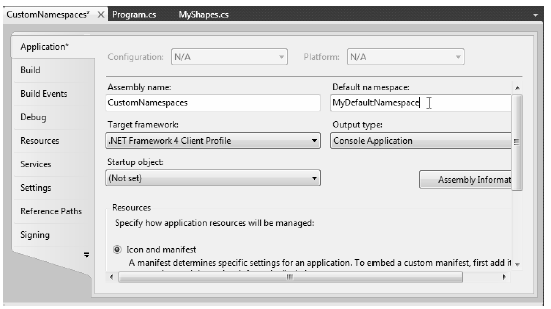

Before diving into the details of assembly deployment and configuration, you must know how to create custom .NET namespaces. Up to this point in the text, you’ve been building small test programs that leverage existing namespaces in the .NET universe (System in particular). However, when you build your own custom applications, it can be very helpful to group your related types into custom namespaces. In C#, this is accomplished using the namespace keyword. Explicitly defining custom namespaces is even more important when creating .NET *.dll assemblies, as other developers will need to import your custom namespaces in order to use your types.
To investigate the issues firsthand, begin by creating a new Console Application named CustomNamespaces. Now, assume you are developing a collection of geometric classes named Square, Circle, and Hexagon. Given their similarities, you would like to group them all together into a unique namespace within the CustomNamespaces.exe assembly called MyShapes. You have two basic approaches. First, you can choose to define all classes in a single C# file (ShapesLib.cs) as follows:
// ShapesLib.cs using System; namespace MyShapes { // Circle class public class Circle { /* Interesting members... */ } // Hexagon class public class Hexagon { /* More interesting members... */ } // Square class public class Square { /* Even more interesting members... */ } }
Alternatively, you can split a single namespace into multiple C# files. To ensure each type is packaged into the same logical group, simply wrap the given class definitions in the same namespace scope:
// Circle.cs using System; namespace MyShapes { // Circle class public class Circle { /* Interesting methods... */ } } // Hexagon.cs using System; namespace MyShapes { // Hexagon class public class Hexagon { /* More interesting methods... */ } } // Square.cs using System; namespace MyShapes { // Square class public class Square { /* Even more interesting methods... */ } }
In both cases, notice how the MyShapes namespace acts as the conceptual “container” of these classes. When another namespace (such as CustomNamespaces) needs to import types defined within a separate namespace, you make use of the using keyword, just as you would when using types in the .NET base class libraries:
// Make use of types defined the MyShape namespace. using System; using MyShapes; namespace CustomNamespaces { public class Program { static void Main(string[] args) { Hexagon h = new Hexagon(); Circle c = new Circle(); Square s = new Square(); } } }
For this particular example, the assumption is that the C# file(s) that define the MyShapes namespace are part of the same Console Application project that contains the file defining the CustomNamespaces namespace; in other words, all of the files are used to compile a single .NET executable assembly.
If you defined the MyShapes namespace within an external assembly, you might need to set a reference to that library before you could compile successfully. You’ll learn all the details of building applications that make use of external libraries during the course of this chapter.
Technically speaking, you are not required to use the C# using keyword when referring to types defined in external namespaces. You could use the fully qualified name of the type, which, as you recall from Chapter 1, is the type’s name prefixed with the defining namespace:
// Note we are not importing MyShapes anymore. using System; namespace CustomNamespaces { public class Program { static void Main(string[] args) { MyShapes.Hexagon h = new MyShapes.Hexagon(); MyShapes.Circle c = new MyShapes.Circle(); MyShapes.Square s = new MyShapes.Square(); } } }
Typically there is no need to use a fully qualified name. Not only does it require a greater number of keystrokes, it also makes no difference whatsoever in terms of code size or execution speed. In fact, in CIL code, types are always defined with the fully qualified name. In this light, the C# using keyword is simply a typing time-saver.
However, fully qualified names can be very helpful (and sometimes necessary) to avoid potential name clashes when using multiple namespaces that contain identically named types. Assume you have a new namespace termed My3DShapes, which defines three classes capable of rendering a shape in stunning 3D:
// Another shape-centric namespace. using System; namespace My3DShapes { // 3D Circle class public class Circle { } // 3D Hexagon class public class Hexagon { } // 3D Square class public class Square { } }
If you update the Program class as seen next, you are issued a number of compile-time errors, because both namespaces define identically named classes:
// Ambiguities abound! using System; using MyShapes; using My3DShapes; namespace CustomNamespaces { public class Program { static void Main(string[] args) { // Which namespace do I reference? Hexagon h = new Hexagon(); // Compiler error! Circle c = new Circle(); // Compiler error! Square s = new Square(); // Compiler error! } } }
The ambiguity can be resolved using the type’s fully qualified name:
// We have now resolved the ambiguity. static void Main(string[] args) { My3DShapes.Hexagon h = new My3DShapes.Hexagon(); My3DShapes.Circle c = new My3DShapes.Circle(); MyShapes.Square s = new MyShapes.Square(); }
The C# using keyword also lets you create an alias for a type’s fully qualified name. When you do so, you define a token that is substituted for the type’s full name at compile time. Defining aliases provides a second way to resolve name-clashes, for example:
using System; using MyShapes; using My3DShapes; // Resolve the ambiguity using a custom alias. using The3DHexagon = My3DShapes.Hexagon; namespace CustomNamespaces { class Program { static void Main(string[] args) { // This is really creating a My3DShapes.Hexagon class. The3DHexagon h2 = new The3DHexagon(); ... } } }
This alternative using syntax also lets you create an alias for a lengthy namespace. One of the longer namespaces in the base class library is System.Runtime.Serialization.Formatters.Binary, which contains a member named BinaryFormatter. If you wish, you can create an instance of the BinaryFormatter as follows:
using bfHome = System.Runtime.Serialization.Formatters.Binary; namespace MyApp { class ShapeTester { static void Main(string[] args) { bfHome.BinaryFormatter b = new bfHome.BinaryFormatter(); } } }
as well as with a traditional using directive:
using System.Runtime.Serialization.Formatters.Binary; namespace MyApp { class ShapeTester { static void Main(string[] args) { BinaryFormatter b = new BinaryFormatter(); } } }
At this point in the game, there is no need to concern yourself with what the BinaryFormatter class is used for (you’ll examine this class in Chapter 20). For now, simply remember that the C# using keyword can be used to define aliases for lengthy fully qualified names or, more commonly, to resolve nameclashes that can arise when importing multiple namespaces that define identically named types.
Note Be aware that overuse of C# aliases can result in a confusing code base. If other programmers on your team are unaware of your custom aliases, they may assume the aliases refer to types in the .NET base class libraries and become quite confused when they can’t find these tokens in the .NET 4.0 framework SDK documentation!
When organizing your types, you are free to define namespaces within other namespaces. The .NET base class libraries do so in numerous places to provide deeper levels of type organization. For example, the IO namespace is nested within System, to yield System.IO. If you want to create a root namespace containing the existing My3DShapes namespace, you can update your code as follows:
// Nesting a namespace. namespace Chapter14 { namespace My3DShapes { // 3D Circle class class Circle{ } // 3D Hexagon class class Hexagon{ } // 3D Square class class Square{ } } }
In many cases, the role of a root namespace is simply to provide a further level of scope, and therefore it may not define any types directly within its scope (as in the case of the Chapter14 namespace). If this is the case, a nested namespace can be defined using the following compact form:
// Nesting a namespace (take two). namespace Chapter14.My3DShapes { // 3D Circle class class Circle{ } // 3D Hexagon class class Hexagon{ } // 3D Square class class Square{ } }
Given that you have now nested the My3DShapes namespace within the Chapter14 root namespace, you need to update any existing using directives and type aliases:
using Chapter14.My3DShapes; using The3DHexagon = Chapter14.My3DShapes.Hexagon;
On a final namespace-related note, it is worth pointing out that, by default, when you create a new C# project using Visual Studio 2010, the name of your application’s default namespace will be identical to the project name. From this point on, when you insert new code files using the Project > Add New Item menu selection, types will automatically be wrapped within the default namespace. If you wish to change the name of the default namespace, simply access the Default namespace option using the Application tab of the project’s Properties window (see Figure 14-1).
Figure 14-1 Configuring the default namespace
With this update, any new item inserted into the project will be wrapped within the MyDefaultNamespace namespace (and, obviously, if another namespace wishes to use these types, the correct using directive must be applied).
So far so good. Now that you have seen some details regarding how to package up your custom types into well-organized namespaces, let’s quickly review the benefits and format of the .NET assembly. After this, we will delve into the details of creating, deploying, and configuring your applications.
Source Code The CustomNamespaces project is located under the Chapter 14 subdirectory.